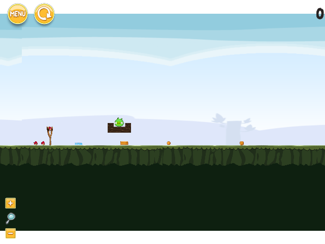
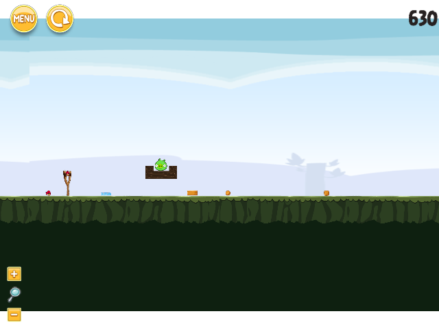
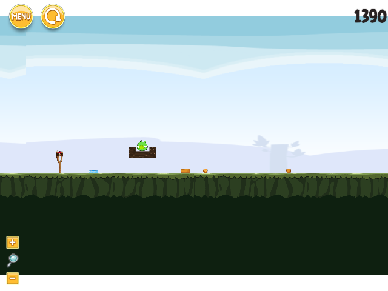
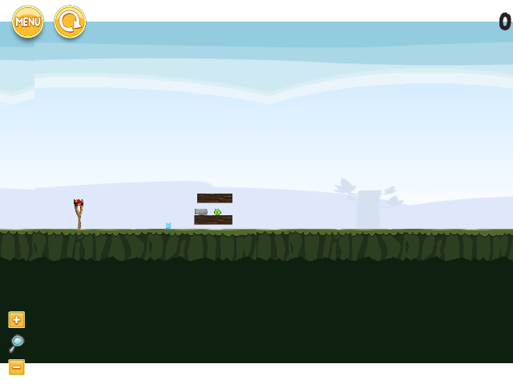

Fixed actions, untrained history; excluded from fitting and fresh evaluation. Videos show every saved shot frame at nominal 50fps. The forced final off-grid frame may shorten the final native interval; display timing is not wall-runtime timing. The separate pre-decision snapshot precedes the video prelaunch frame.
Complete: False; success: False; failure: ObservationTraceError: camera position is incomplete
Failed before a shot; no persisted agent image available.
Complete: True; success: False; failure: None
Shot 1; native terminal: {'reason': 'stable_entered', 'fixed_step': 29390, 'event_id': 'event:29390:stable_entered:0102', 'payload': {}}; censored: False

Shot 2; native terminal: {'reason': 'stable_entered', 'fixed_step': 80633, 'event_id': 'event:80633:stable_entered:0254', 'payload': {}}; censored: False

Shot 3; native terminal: None; censored: True

Complete: True; success: False; failure: None
Shot 1; native terminal: None; censored: True
